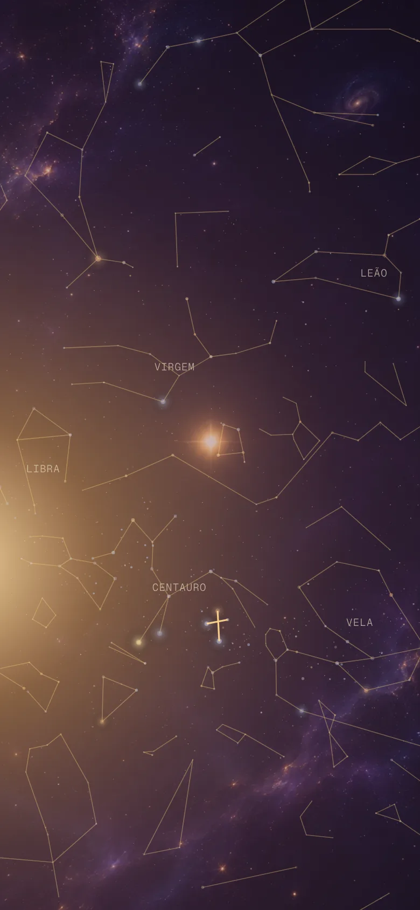

Meu mapa
Intuitive Concept
Bianca
Construir · Intuir
{{s.k}}
{{s.v}}
Uma parte de mim quer raiz. A outra quer estrada.
O céu sobre Vitória
às 7h25 de 21/12/1994
Descubra o seu céu
intuitiveconcept.com.br/ceu